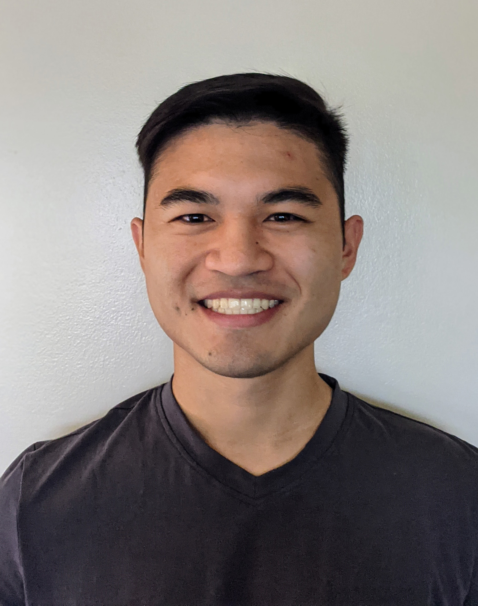

Hi, I’m Eliot Wong-Toi, a PhD Candidate in Statistics at the University of California, Irvine, advised by Stephan Mandt. My research focuses on uncertainty quantification in regression and generative models, including mean-variance regression, generative uncertainty, and conformal prediction.
I received my BS in Mathematics–Computer Science (cum laude) from UC San Diego, where I worked in the Pulmonary Imaging Lab under Rui Carlos Pereira de Sá. There, I applied deep learning methods to medical imaging, developing tools to accelerate annotation and analysis.
Beyond methodological research, I have applied machine learning to complex, high-frequency datasets. During my internship at Dexcom, I developed representation learning models for time-series clustering. I have also worked on sports analytics with Bayesian nonparametrics and contributed to clinical trial design software through open-source development.
My work has been supported by a Hasso Plattner Institute Research Fellowship. I enjoy working at the intersection of statistical theory, machine learning, and applied data problems.
I will complete my PhD in December 2025 and am currently seeking Applied Scientist or Data Scientist roles where I can combine methodological innovation with impactful applications.
First-Author Publications
Co-Author Publications